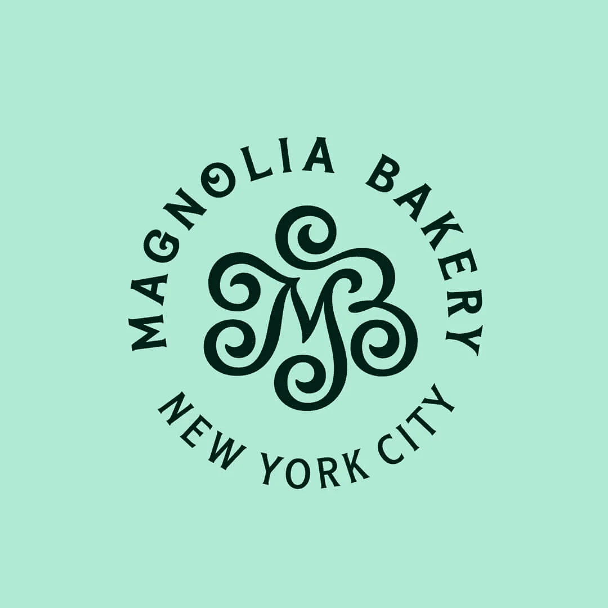
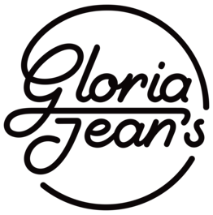

1980'li yıllarda ticaret hayatına adım atan Oreka Gıda, gıda tedarik sektöründe kalite, güven ve hızlı hizmet anlayışıyla büyümeye devam etmektedir. Zırhlı Yapı Tekstil Turizm Destek Hizmetleri ve Petrol Ürünleri Sanayi ve Ticaret Ltd. Şti. bünyesinde faaliyet gösteren marka, oteller, restoranlar, kafeler ve catering firmalarına güvenilir ürün tedariği sağlamaktadır.
Oreka Gıda, modern lojistik ve depolama sistemleriyle ürünlerini hijyenik ve güvenilir koşullarda müşterilerine ulaştırmaktadır.
OrekaGıda olarak Araçlarımız Frigofrikli olup dondurulmuş ürünlerinizi ilk günkü tazeliği ile sizlere teslim ediyoruz. Başarımızın temeli elbette siz değerli müşterilerimiz için her zaman aktif olarak çalışan ekip arkadaşlarımızdır. Oldukça geniş ürün yelpazesi ile sizlere en kaliteli ürünleri en uygun fiyata veriyoruz, ambalajları yıpranmış, ezik, paslı raf ömrü 3 te 1 i kalan ürünleri kesinlikle teslim etmiyoruz.
Oreka ile kafanız her zaman rahat!
Operasyonel gücümüzü pazarlamamızın en büyük kozu olarak görüyoruz.
Portföyümüzü oluştururken sadece fiyatı değil, şeflerimizin beklentilerini baz alıyoruz.
Sadece bir tedarikçi değil, mutfağınızın bir parçası gibi çalışıyoruz.
Bir işletmenin başarısının mutfağından başladığını, mutfağın başarısının ise doğru ham maddeye zamanında ulaşmak olduğunu biliyoruz. Oreka Gıda olarak pazarlama stratejimizi sadece ürün satışı değil, sürdürülebilir bir iş ortaklığı üzerine kurguluyoruz.

